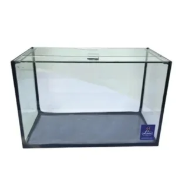

Aquário Compacto Retangular 18L

Preço: R$ 159,90
Especificações do Produto:
- Marca: Lester
- Material: Vidro e silicone para aquarismo
- Medidas: 60cm x 30cm x 40cm
- Recomendações: Lave o aquário apenas com água corrente, sem utilizar produtos químicos. Instale em local plano e resistente. Utilize água tratada com anticloro, mantenha o filtro ligado e realize limpezas periódicas com trocas parciais de água. Não manuseie o produto cheio de água